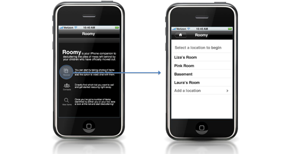
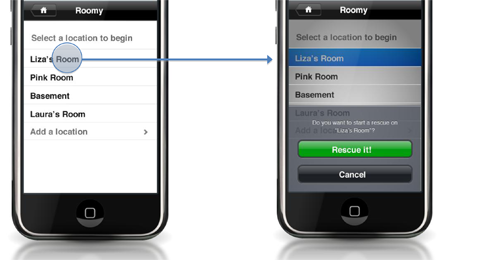
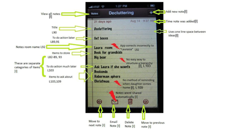
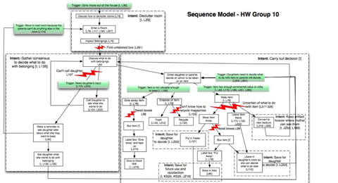
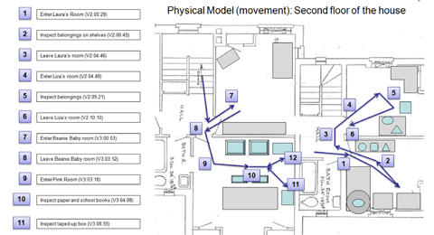
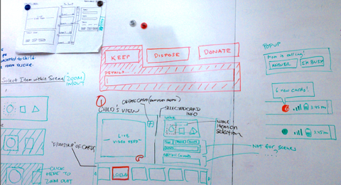
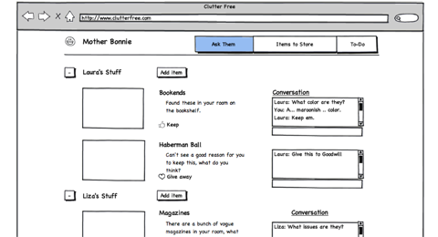

Rapid sketching generated multiple ideas for interaction.

Modeling current artifacts helped us understand what works and doesn't.

A sequence model helped us understand user intents and breakdowns.

A physical model of the user's workspace is a crucial element.

Whiteboarding interface ideas helped to rapidly generate ideas.

A wireframe of Roomy's web application based on identified needs.